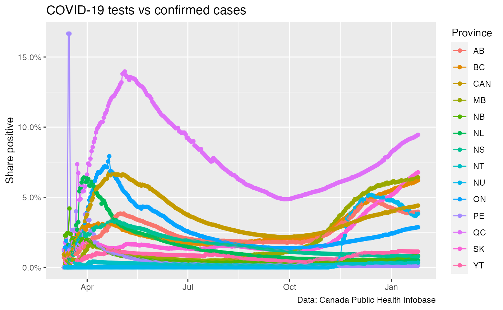

knitr::opts_chunk$set(warning = FALSE, message = FALSE) library(CanCovidData) library(dplyr) library(ggplot2)
#test_data <- get_canada_covid_working_group_tests() test_data_official <- get_canada_official_provincial_data() %>% filter(!is.na(Tested)) test_data_official %>% filter(shortProvince != "CAN") %>% ggplot(aes(x=Date,y=Tested,color=shortProvince)) + geom_line() + geom_point() + scale_y_continuous(labels=scales::comma) + labs(title="COVID-19 tests",x=NULL,y="Cumulative number of tests",color="Province", caption="Data: Canada Public Health Infobase")

#case_data <- get_canada_covid_working_group_provincial_data() #inner_join(case_data,test_data,by=c("shortProvince","Province","Date")) %>% test_data_official %>% mutate(`Share positive`=Confirmed/Tested) %>% filter(shortProvince!="Repatriated") %>% ggplot(aes(x=Date,y=`Share positive`,color=shortProvince)) + geom_line() + geom_point() + scale_y_continuous(labels=scales::percent) + labs(title="COVID-19 tests vs confirmed cases",x=NULL,colour="Province", caption="Data: Canada Public Health Infobase")
